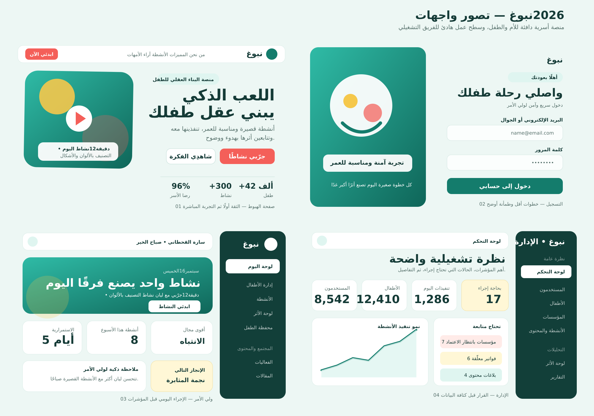

Nobogh UI 2026
نماذج إعادة تصميم منصة نبوغ
أربع واجهات مترابطة بهوية واحدة: تجربة دافئة وواضحة للأسرة، وتجربة تشغيلية مركزة لفريق الإدارة.

صفحة الهبوط
قصة واضحة، دليل ثقة، وتجربة نشاط مباشرة قبل التسجيل.
فتح النموذج ← 02التسجيل والدخول
تدفق مطمئن وقصير مع فصل واضح بين دخول ولي الأمر ودخول الطفل.
فتح النموذج ← 03لوحة ولي الأمر
الإجراء اليومي أولًا، ثم التقدم والتوصيات ومحفظة الطفل.
فتح النموذج ← 04لوحة مدير النظام
كثافة معلومات متوازنة مع إبراز الحالات التي تحتاج قرارًا.
فتح النموذج ←ملاحظة للفريق التقني: ملف nobogh-redesign.css هو طبقة التصميم الموحدة. أبقوه بجانب ملفات HTML عند المعاينة أو الدمج.